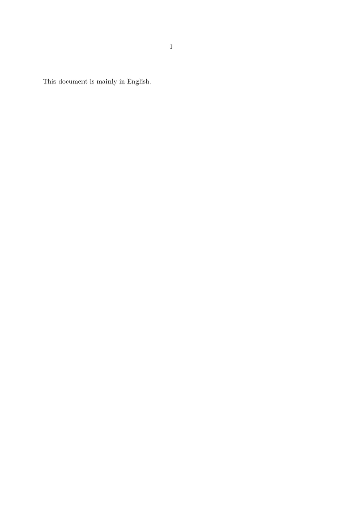
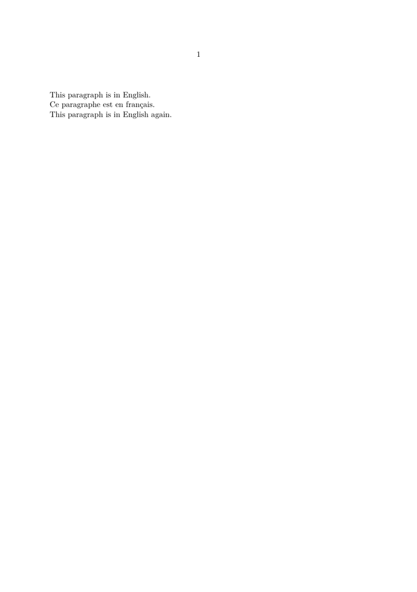
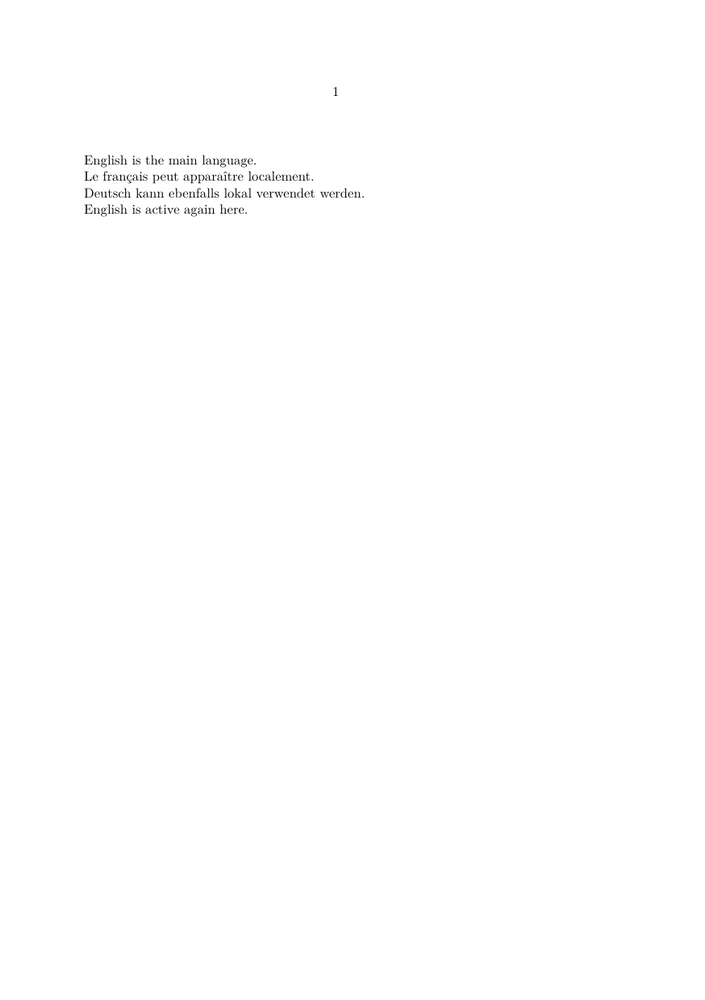
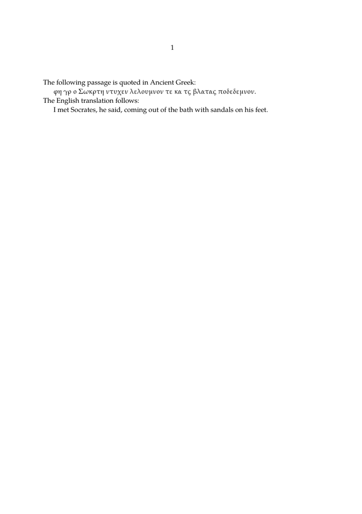
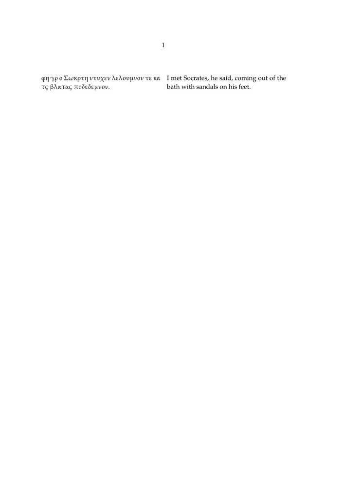
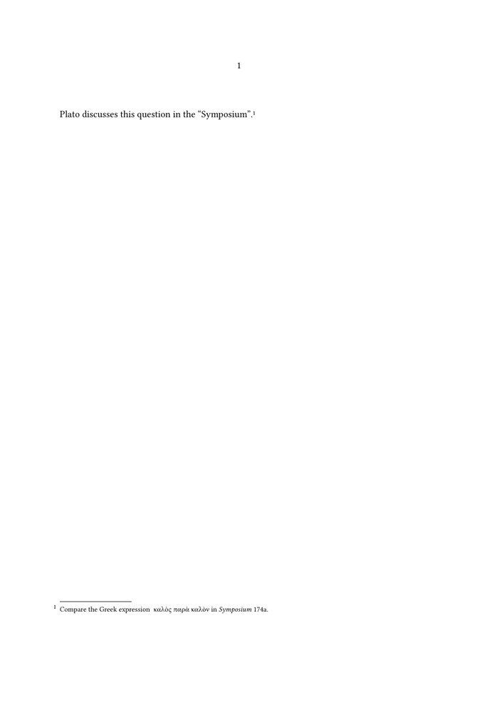

🚧 This page is currently being revised and reconstructed.
Its structure, examples, and explanations are being updated for current ConTeXt and LuaMetaTeX. Please feel free to edit, correct, or improve this page while the revision is in progress.
Languages in ConTeXt · Input and compilation · Languages · Mixed languages · Right-to-left and BiDi
Contents
-
1
Mixed languages
- 1.1 1. Start with the main language
- 1.2 2. Switch to another language locally
- 1.3 3. Several languages using the same script
- 1.4 4. Language and script are separate questions
- 1.5 5. Check whether ConTeXt can see a font
- 1.6 6. Add a fallback for another script
- 1.7 7. A scholarly example: Ancient Greek and English
- 1.8 8. Put an original text and translation side by side
- 1.9 9. A document may contain several scripts
- 1.10 10. Right-to-left languages require more than a font
- 1.11 11. Chinese, Japanese, and Korean
- 1.12 12. Notes, quotations, and bibliographies may also change language
- 1.13 13. Use semantic structure before adding complexity
- 1.14 14. Troubleshooting
- 1.15 15. What belongs on another page?
- 1.16 16. Practical checklist
- 1.17 17. Further reading
- 1.18 18. Related pages
A ConTeXt document may have one main language while containing passages, quotations, notes, bibliographical references, or examples in several other languages.
Typical cases include:
- an English book quoting French or German;
- a philosophical commentary containing Ancient Greek;
- a scholarly edition presenting an original text and a translation;
- a history or theology book containing Hebrew or Arabic;
- a linguistic document combining several scripts;
- a bibliography containing names and titles in their original scripts.
This page is a how-to guide. It shows how to establish the main language of a document, switch language locally, and add font support when another writing system is required.
For the concepts behind language, script, font, direction, shaping, and typographical conventions, first see Languages.
The basic principle
For many multilingual documents, begin with only two mechanisms:
\mainlanguage[...] establishes the main document language \language[...] changes the current language locally
Font fallbacks, right-to-left direction, shaping, and script-specific typography are separate questions. Add them only when the document requires them.
1. Start with the main language
Set the principal language of the document with \mainlanguage.
For an English document:
-
\mainlanguage[en] \starttext This document is mainly in English. \stoptext
-

For a French document:
\mainlanguage[fr]
The main language provides the principal linguistic context used by language-sensitive mechanisms such as hyphenation, quotation conventions, and generated text.
If you need an introduction to the distinction between the main language and the current language, see Languages: Main language and current language.
2. Switch to another language locally
Use \language when a passage uses a language different from the main language.
It is usually convenient to make the change inside a local group:
-
\mainlanguage[en] \starttext This paragraph is in English. \start \language[fr] Ce paragraphe est en français. \stop This paragraph is in English again. \stoptext
-

The \start ... \stop group limits the language change to the
passage inside it.
Conceptually:
main document
|
+-- English
|
+-- French passage
| \language[fr]
|
+-- English again
Do not change the main language merely to quote another language.
For a document whose principal language remains English, a French, German,
Dutch, or Greek quotation normally requires a local
\language[...] change, not a new
\mainlanguage.
3. Several languages using the same script
The simplest multilingual case involves languages that use the same writing system.
For example:
-
\mainlanguage[en] \starttext English is the main language. \start \language[fr] Le français peut apparaître localement. \stop \start \language[de] Deutsch kann ebenfalls lokal verwendet werden. \stop English is active again here. \stoptext
-

If the current font contains all the required characters, no additional font setup may be necessary.
This is why it is useful to distinguish:
changing language
≠
changing font
4. Language and script are separate questions
A language switch tells ConTeXt which linguistic context is active.
It does not necessarily guarantee that the current font contains the characters required by the text.
Consider a scholarly document containing:
English Latin script Ancient Greek Greek script Arabic Arabic script Chinese Han characters
The document therefore has two related but distinct requirements:
LANGUAGE | +-- hyphenation +-- quotations +-- language-sensitive conventions SCRIPT / FONT | +-- glyph coverage +-- shaping +-- combining marks +-- fallbacks
See Languages: Language, script, and font are different for a fuller explanation.
5. Check whether ConTeXt can see a font
Before defining a fallback, make sure that ConTeXt can find the font.
A general font listing can be obtained with:
mtxrun --script fonts --list --all
To search for a particular font family, use a pattern. For example:
mtxrun --script fonts --list --pattern="theano" --all
or:
mtxrun --script fonts --list --pattern="noto" --all
Font installation and font-cache maintenance are not the subject of this guide.
See instead:
- Fonts — overview of font handling;
- Use the fonts you want — using installed fonts and fonts added to a ConTeXt installation.
6. Add a fallback for another script
When the main text font does not contain a required script, a font fallback can provide the missing characters.
A typical structure is:
\definefallbackfamily [mainface] [serif] [Fallback Font] [range=...] \definefontfamily [mainface] [serif] [Main Font] \setupbodyfont [mainface]
The fallback is associated with the bodyfont family and is used for the specified Unicode range.
6.1 Ancient Greek
The older version of this page used Theano Didot for Ancient Greek. That remains a useful example of the general method:
\definefallbackfamily [mainface] [serif] [Theano Didot] [preset=range:greek, force=yes]
A main serif family can then be defined separately:
\definefontfamily [mainface] [serif] [TeX Gyre Pagella] \setupbodyfont [mainface]
The important principle is not the particular font family, but the division of labour:
main text font
+
Greek fallback
=
one bodyfont environment
able to cover both scripts
For Greek-specific questions, see Greek.
A fallback does not change the language.
A Greek fallback supplies Greek glyphs.
The linguistic context is still controlled separately by commands such as:
\language[agr]
Font selection and language selection solve different problems.
7. A scholarly example: Ancient Greek and English
A common humanities use case is a commentary or edition containing an original Greek passage and an English translation.
The older version of this page used a passage from Plato's Symposium. We retain that example here in a smaller and more focused form.
-
\mainlanguage[en] \definefallbackfamily [mainface] [serif] [Theano Didot] [preset=range:greek, force=yes] \definefontfamily [mainface] [serif] [TeX Gyre Pagella] \setupbodyfont [mainface] \starttext The following passage is quoted in Ancient Greek: \startblockquote \start \language[agr] Ἔφη γάρ οἱ Σωκράτη ἐντυχεῖν λελουμένον τε καὶ τὰς βλαύτας ὑποδεδεμένον. \stop \stopblockquote The English translation follows: \startblockquote I met Socrates, he said, coming out of the bath with sandals on his feet. \stopblockquote \stoptext
-

This example combines three independent choices:
English | +-- main language Ancient Greek | +-- local language Greek script | +-- Greek-capable font fallback
8. Put an original text and translation side by side
A scholarly edition may require the original text and its translation on the same page.
One possible ConTeXt mechanism is \defineparagraphs:
-
\mainlanguage[en] \definefallbackfamily [mainface] [serif] [Theano Didot] [preset=range:greek, force=yes] \definefontfamily [mainface] [serif] [TeX Gyre Pagella] \setupbodyfont [mainface] \defineparagraphs [Parallel] [n=2, distance=1em] \starttext \startParallel \start \language[agr] Ἔφη γάρ οἱ Σωκράτη ἐντυχεῖν λελουμένον τε καὶ τὰς βλαύτας ὑποδεδεμένον. \stop \Parallel I met Socrates, he said, coming out of the bath with sandals on his feet. \stopParallel \stoptext
-

The purpose of this example is to show how multilingual typesetting can be combined with document structure.
More elaborate parallel editions may also require:
- synchronized paragraphs;
- line numbering;
- critical notes;
- translation notes;
- bibliographical references;
- several note series.
Those are separate layout and editorial questions rather than language configuration itself.
9. A document may contain several scripts
The older version of this page deliberately combined Greek, Chinese, and Arabic in one scholarly document.
That remains a useful test case.
For example, a humanities text might mention:
Plato Πλάτων Zhuangzi 莊子 al-Fārābī الفارابي
This illustrates an important point:
multilingual document
|
+-- several languages
|
+-- several scripts
|
+-- several font requirements
|
+-- possibly several writing directions
A single document may therefore require several fallbacks.
For example, conceptually:
\definefallbackfamily [mainface] [serif] [Greek Font] [range=greek] \definefallbackfamily [mainface] [serif] [Arabic Font] [range=arabic] \definefallbackfamily [mainface] [serif] [CJK Font] [range=cjkunifiedideographs]
The exact font names depend on the fonts available in the ConTeXt installation.
See also:
10. Right-to-left languages require more than a font
Arabic and Hebrew illustrate why multilingual typesetting cannot be reduced to font coverage.
A suitable font may provide all the required glyphs, but the text may also require:
- right-to-left direction;
- bidirectional processing;
- contextual shaping;
- correct treatment of numbers and punctuation;
- correct behaviour when Latin text occurs inside an RTL paragraph.
Conceptually:
Arabic or Hebrew text
|
+-- suitable font
+-- script shaping
+-- RTL direction
+-- BiDi handling
Do not solve an RTL problem only by changing the font.
If Arabic or Hebrew characters are visible but the text runs in the wrong direction, the problem is no longer font coverage.
See Right-to-left and BiDi and Arabic and Hebrew.
11. Chinese, Japanese, and Korean
CJK text raises another set of questions.
A font must contain the required characters, but correct typesetting may also involve:
- regional glyph conventions;
- punctuation;
- line-breaking rules;
- horizontal or vertical composition.
The older version of this page used a passage from Zhuangzi to demonstrate Chinese text inside a predominantly English scholarly document.
A short extract illustrates the principle:
惠子謂莊子曰。 子言無用。莊子曰。 知無用。而始可與言用矣。
The presence of these Unicode characters does not by itself determine the correct CJK typography.
See Chinese, Japanese and Korean and CJK fonts.
12. Notes, quotations, and bibliographies may also change language
Language changes are not limited to the main prose.
A multilingual scholarly document may contain another language in:
- block quotations;
- footnotes;
- marginal notes;
- captions;
- bibliographical titles;
- author names;
- indexes and registers.
For example:
-
\definefontfamily [mainface] [serif] [Libertinus Serif] \setupbodyfont [mainface] \mainlanguage[en] \starttext Plato discusses this question in the \quotation{Symposium}.\footnote{ Compare the Greek expression \start \language[agr] καλὸς παρὰ καλὸν \stop in \emph{Symposium} 174a. } \stoptext
-

The language change should be applied where the language actually changes, regardless of whether the text occurs in the body, a note, or another document element.
13. Use semantic structure before adding complexity
When constructing a multilingual document, add mechanisms progressively.
A useful order is:
1. choose the main language
|
v
2. test a local language switch
|
v
3. check whether the main font covers the script
|
v
4. add a fallback if necessary
|
v
5. check shaping
|
v
6. check writing direction
|
v
7. check language-specific typography
|
v
8. only then add complex layout
Do not begin by combining several font fallbacks, columns, notes, headers, frames, and bidirectional text in a single test.
A small working example makes it much easier to determine which layer is responsible for a problem.
14. Troubleshooting
| Symptom | First thing to check |
|---|---|
| another Latin-script language has incorrect hyphenation | current language |
| quotation marks follow the wrong convention | current language and quotation setup |
| Greek or other characters appear as empty boxes | font coverage and fallback |
| combining marks are poorly positioned | font and shaping support |
| Arabic characters appear but run in the wrong direction | RTL and BiDi setup |
| Arabic letters do not join correctly | shaping and font support |
| Chinese characters appear but line breaking is poor | CJK line-breaking and punctuation rules |
| generated labels appear in the wrong language | main language |
| bibliography or index sorting is unexpected | collation and sorting rules |
15. What belongs on another page?
This guide deliberately does not attempt to document every aspect of multilingual typography.
Use the specialized pages for detailed questions:
| Question | Page |
|---|---|
| What is the difference between language, script, font, and direction? | Languages |
| How do I configure fonts? | Fonts and Use the fonts you want |
| How do I typeset Ancient Greek? | Greek |
| How do I handle Arabic or Hebrew? | Arabic and Hebrew |
| How do I handle RTL and mixed RTL/LTR text? | Right-to-left and BiDi |
| How do I typeset Chinese, Japanese, or Korean? | Chinese, Japanese and Korean |
| How do I work with Indic scripts? | Indic scripts |
| How do I investigate hyphenation? | Hyphenation |
16. Practical checklist
Before considering a multilingual document ready for production, check:
main document language
✓
local language changes
✓
font coverage
✓
fallbacks where required
✓
combining marks and shaping
✓
LTR / RTL direction
✓
BiDi passages
✓
line breaking
✓
punctuation and quotation conventions
✓
notes and bibliographical material
✓
Keep the layers separate while testing.
When something goes wrong, ask first which layer is involved:
language? script? font? shaping? direction? line breaking? typographical convention?
This is usually more effective than changing several settings at once.
17. Further reading
- Languages — orientation and explanation;
- Greek ;
- Arabic and Hebrew ;
- Right-to-left and BiDi ;
- Chinese, Japanese and Korean ;
- Indic scripts ;
- Fonts ;
- Use the fonts you want ;
- Hyphenation ;
- Languages in ConTeXt — official PRAGMA manual;
- Bidirectional typesetting — official PRAGMA documentation.
18. Related pages
- Input and compilation
- Languages
- Greek
- French
- Arabic and Hebrew
- Right-to-left RTL
- Chinese Japanese and Korean
- CJK fonts
- Indic scripts
- Fonts
- Use the fonts you want
Languages in ConTeXt · Input and compilation · Languages · Mixed languages · Right-to-left and BiDi